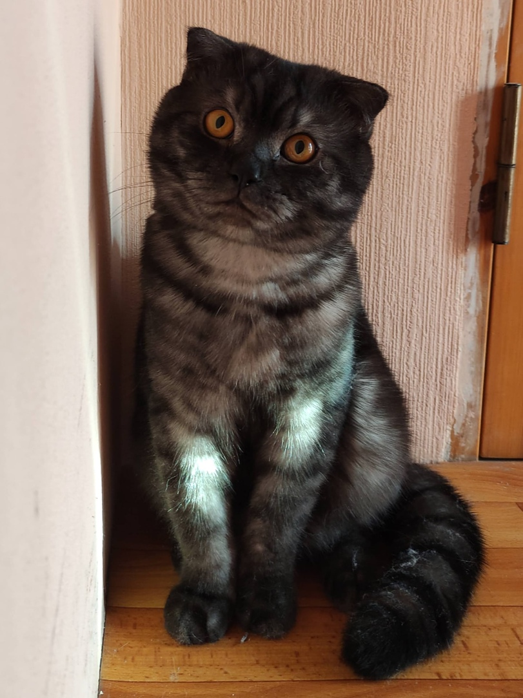
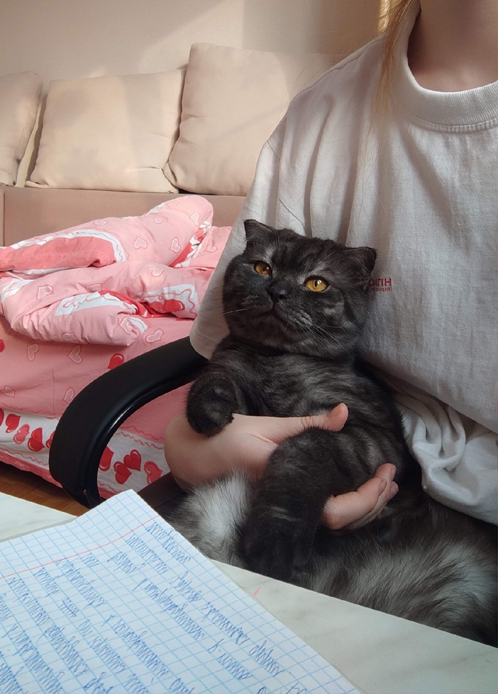
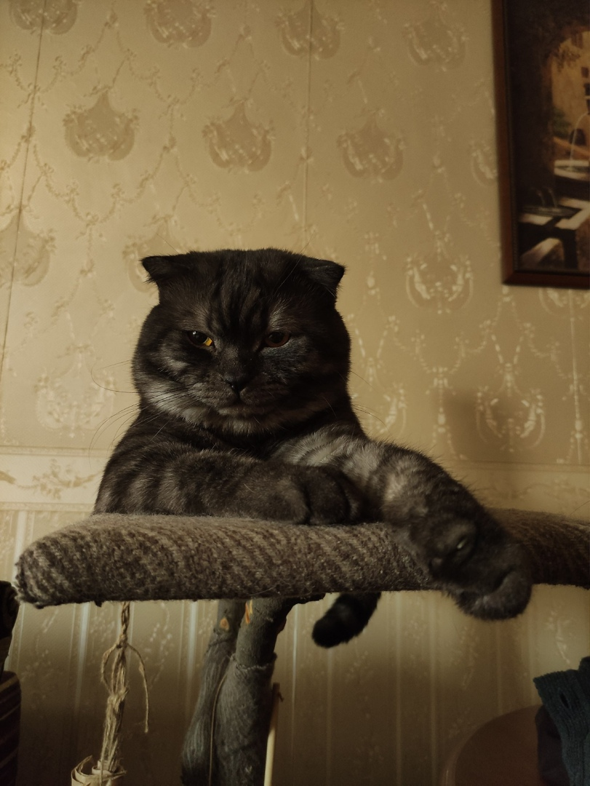
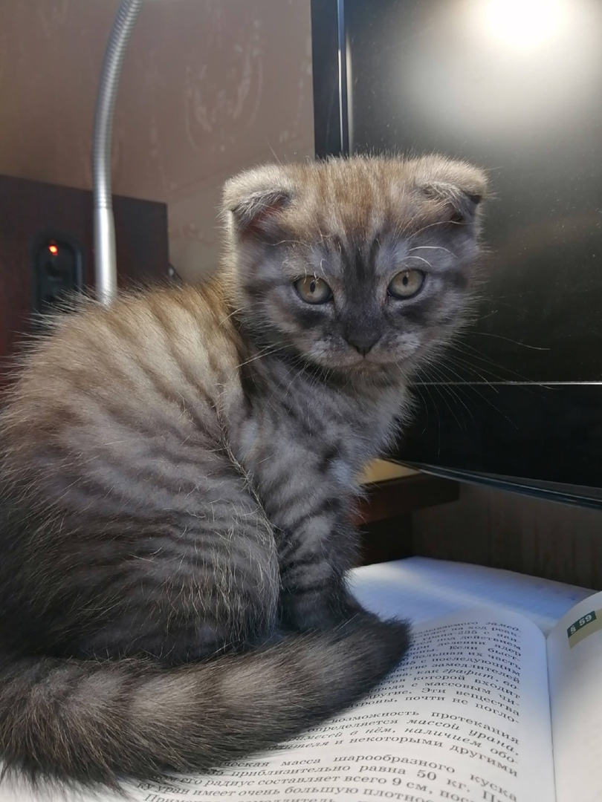
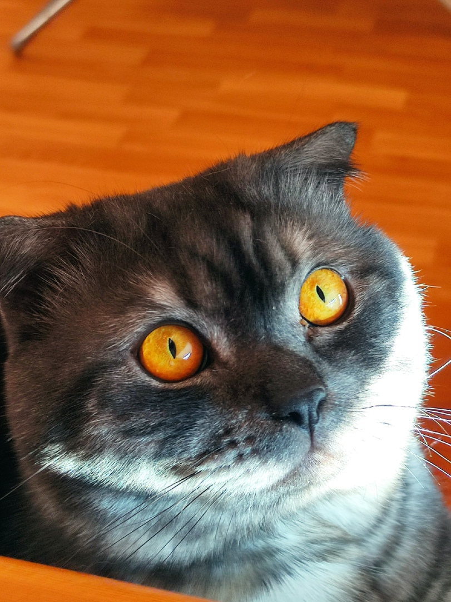

Шотландские вислоухие кошки обладают оригинальной внешностью и идеальным характером. Они преданы своим хозяевам, любят ласку, но достаточно самостоятельны и не будут ходить за вами хвостиком. В котах развита природная любознательность, иногда они забавно встают на задние лапы, как бы высматривая объект, которых их заинтересовал. Шотландские вислоухие неприхотливы в содержании и прекрасно ладят с другими домашними животными.
Шотландская вислоухая (скоттиш-фолд) – одна из самых популярных пород во всем мире. Это миловидные кошки с необычной внешностью и широкой палитрой окраса. Их вес в среднем составляет от 2,5 до 6 кг.
У шотландских вислоухих крепкое, коренастое телосложение, короткое туловище, с плавными округлыми изгибами. Голова круглая с немного выпуклым любом и закругленными щеками (у взрослых самцов могут быть обвислые щечки), мордочка округлая, с крепким подбородком. Глаза большие, круглые, цвет глаз соответствует окрасу. Уши маленькие, с закругленными кончиками, загнуты вперед. Хвост широкий у основания и суживающийся к кончику, не очень длинный, его длина не превышает 2/3 длины тела.
Шерсть прямая, густая и блестящая, может быть короткой или средней длины (две разновидности). Разнообразие окрасов шотландских кошек меня лично впечатляет. Их «шубки» могут быть практически всех цветов. Исключение — тёмный шоколадный и лиловый. Встречаются среди этой породы не только однотонные кошки, но и биколоры (белый цвет сочетается с другим), пятнистые и мраморные разных оттенков, табби (с узором из двух цветов). Есть шотландцы и с преобладанием белого цвета шерсти (окрасы арлекин и ван).
   